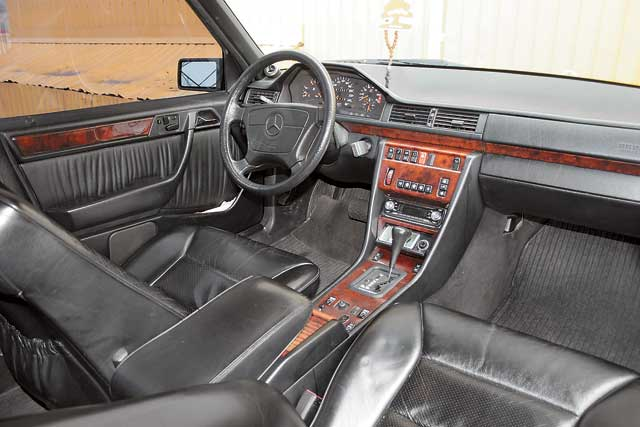
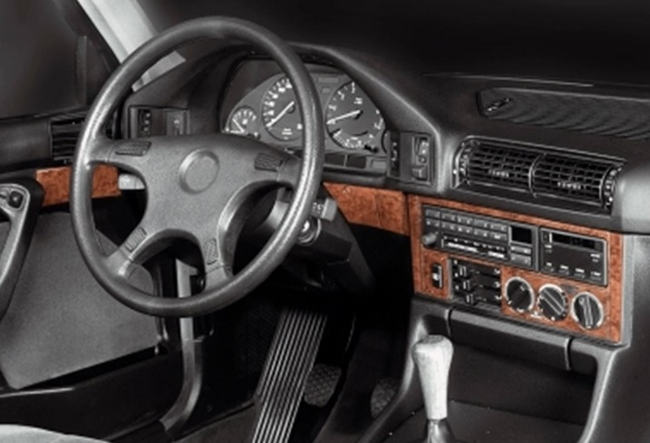

Mercedes W124 |
BMW E34 |
Бачимо, що Мерседес в основному їздить по бетонному покриттю, а БМВ їздить у якомусь лісі.
|

Mercedes W124 |

BMW E34 |
Бачимо, що БМВ в салоні більш округла, а Мерседес відповідно більш квадратний.
Хоча, якщо відверто, то зовні теж проглядається така тенденція )
| Показник,мм | Mercedes W124 | BMW E34 |
|---|---|---|
| Довжина | 4740 | 4720 |
| Ширина | 1740 | 1750 |
| Висота | 1445 | 1410 |
Ще є купа різноманітних характеристик, але про них не сьогодні.
І навіть не завтра,
Порівняли, бачимо, що Мерседес довший, вужчий та вищій, проте БМВ коротша,ширша та нижча.
Але не лякайтесь - гараж їм підійде однаковий.